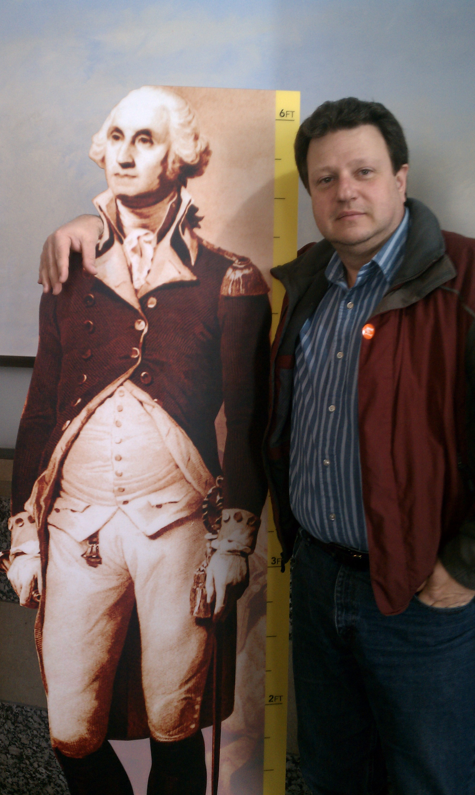

Connect with me


 Hi all, my name is Walter Zuschlag and I am a transplant form the East coast, Massachusetts 40 miles outside of the Boston, a city named Worcester to be exact. I was relocated here by my previous employer Seagate about 10 years ago. I am a highly motivated electrical engineer with 20+ years in the storage device industry, expertise developing tests and test equipment, managing cross-functional multiple sited projects, and collaborating with a wide variety of professionals and engineering disciplines. Exceptional interpersonal skills and have the ability and enthusiasm to travel globally. Times and technologies have changed over the years and the disc drive industry has been on a decline due to new solid-state technology used for storage. So now I find myself with an opportunity to further educate myself for a possible career change in coding. In my spare time, I enjoy outdoor activities of all kind especially new adventures with my family. I enjoy golfing, trap shooting, motor sports of all kind especially road trips riding my Harley with my wife by my side. Don’t get me wrong but I also enjoy slowing down a bit on warm summer days hanging with family, friend and some cocktails not always it that order.